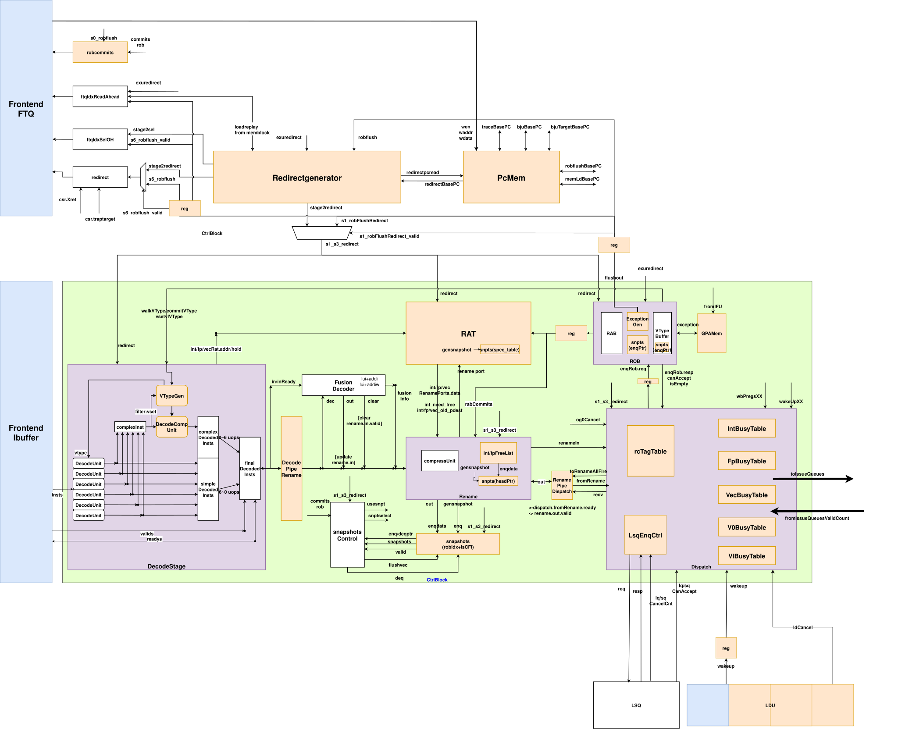
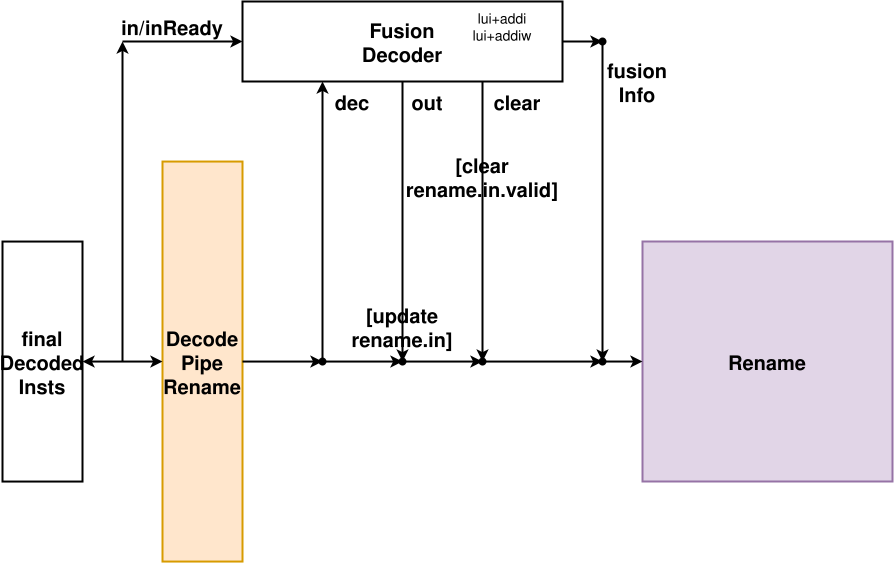
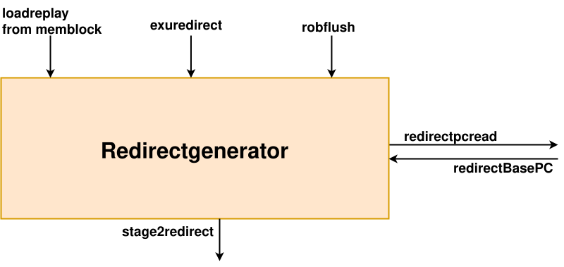
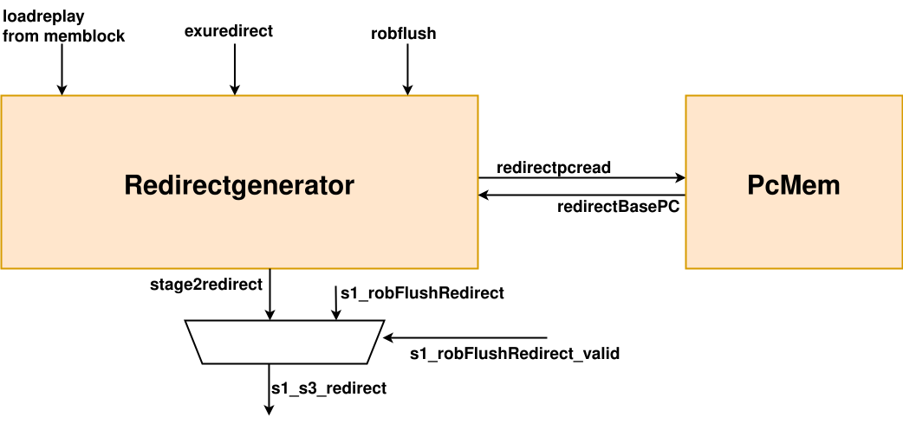
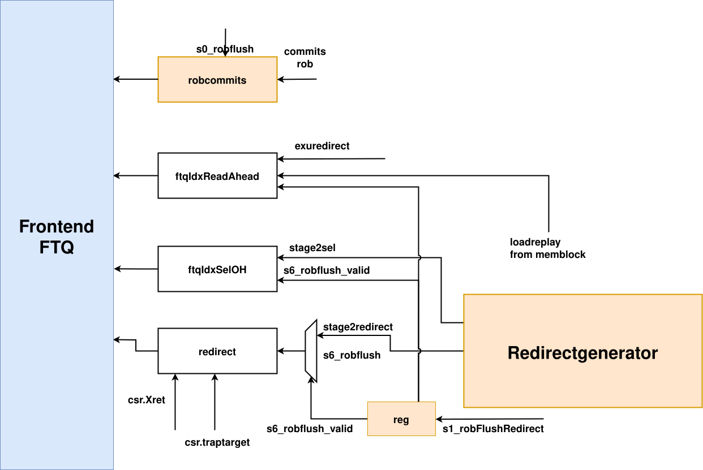
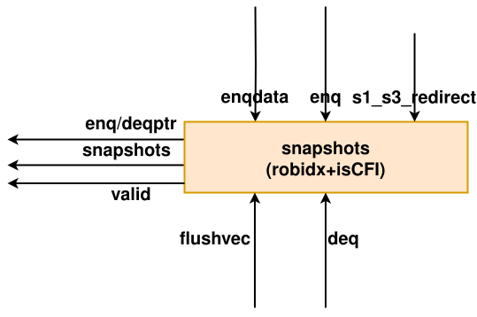
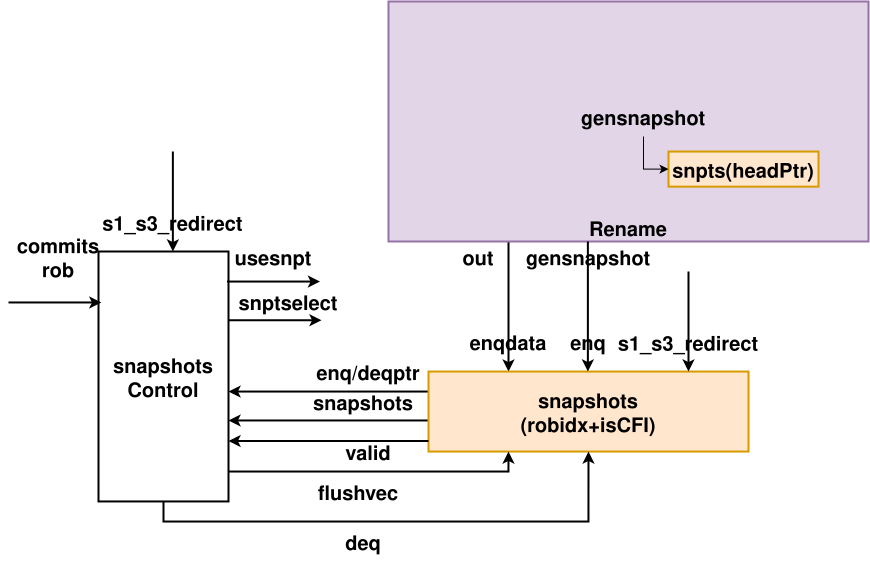
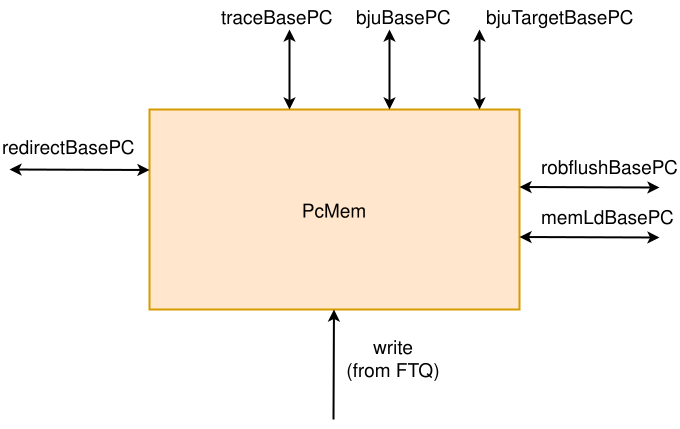
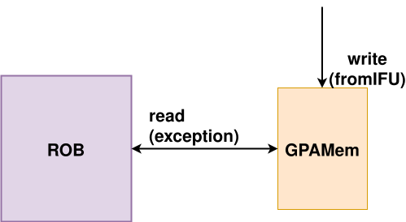
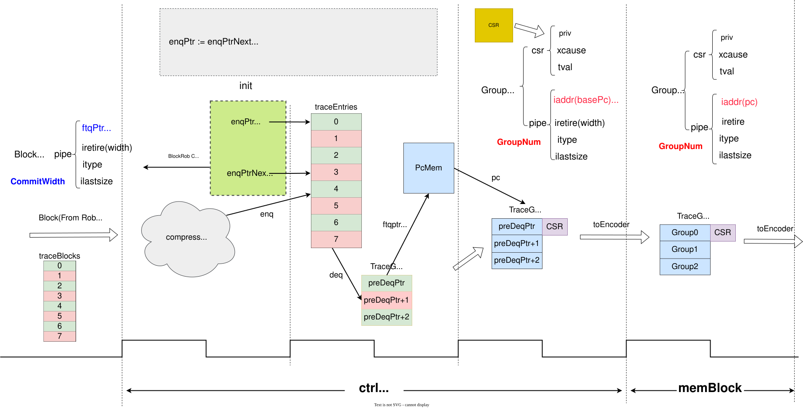

CtrlBlock
- バージョン: V2R2
- ステータス: OK
- 日付: 2025/01/15
- コミット: xxx
用語説明
| 略語 | 正式名称 | 説明 |
|---|---|---|
| - | Decode Unit | デコードユニット |
| - | Fusion Decoder | 命令融合 |
| ROB | Reorder Buffer | リオーダバッファ |
| RAT | Register Alias Table | リネームマッピングテーブル |
| - | Rename | リネーム |
| LSQ | Load Store Queue | ロードストアキュー |
| - | Dispatch | ディスパッチ |
| IntDq | Int Dispatch Queue | 整数ディスパッチキュー |
| fpDq | Float Point Dispatch Queue | 浮動小数点ディスパッチキュー |
| lsDq | Load Store Dispatch Queue | ロードストアディスパッチキュー |
| - | Redirect | 命令リダイレクト |
| pcMem | PC MEM | PCキャッシュ |
サブモジュールリスト
| サブモジュール | 説明 |
|---|---|
| dispatch | 命令ディスパッチモジュール |
| decode | 命令デコードモジュール |
| fusionDecoder | 命令融合モジュール |
| rat | リネームテーブル |
| rename | リネームモジュール |
| redirectGen | リダイレクト生成モジュール |
| pcMem | PCキャッシュ |
| rob | リオーダバッファ |
| trace | 命令トレースモジュール |
| snpt | スナップショットモジュール |
設計仕様
デコード幅: 6
リネーム幅: 6
ディスパッチ幅: 6
ROBコミット幅: 8
RABコミット幅: 6
ROBサイズ: 160
スナップショットサイズ: 4エントリ
整数物理レジスタ数: 224
浮動小数点物理レジスタ数: 192
ベクトル物理レジスタ数: 128
ベクトルv0物理レジスタ数: 22
ベクトルvl物理レジスタ数: 32
リネームスナップショットをサポート
トレース拡張をサポート
機能
CtrlBlockモジュールには、命令デコード(Decode)、命令融合(FusionDecoder)、レジスタリネーム(Rename, RenameTable)、命令ディスパッチ(Dispatch)、コミットユニット(ROB)、リダイレクト処理(RedirectGenerator)、スナップショットリネーム回復(SnapshotGenerator)が含まれます。
デコード機能ユニットは、各クロックサイクルで命令キューの先頭から6つの命令を取り出してデコードします。デコードプロセスは、命令コードを機能ユニットが処理しやすい内部コードに変換し、命令タイプ、操作が必要なレジスタ番号、および命令コードに含まれる可能性のある即値などを識別し、次のレジスタリネーム段階で使用します。複雑な命令については、選択後に複雑なデコーダDecodeCompunitを介して一度に1つずつ命令を分割し、vset命令についてはVtypeに格納して命令分割をガイドします。最後に、複雑な命令を前に、単純な命令を後ろにして、サイクルごとに6つのuopを選択してリネーム段階に渡します。デコード段階には、RenameTableの読み取りリクエストの発行も含まれます。
命令融合は、命令デコードで得られた6つのuopから、(uop0, uop1), (uop1, uop2), (uop2, uop3), (uop3, uop4), (uop4, uop5)の最大5つの融合候補ペアを作成します。次に、各命令ペアが命令融合可能かどうかを判断します。現在、新しい制御信号を持つ命令への融合と、最初の命令の操作エンコーディングを別のものに置き換える形式の2種類の命令融合をサポートしています。命令融合が可能と判断された後、uopのオペランド、例えば論理レジスタ番号などを再割り当てし、新しいオペランドを選択します。また、HINTクラスの命令は命令融合をサポートしておらず、例えばfence命令は融合できません。
リネーム段階は、レジスタと物理レジスタ間のマッピングを管理および維持し、論理レジスタのリネームを通じて命令間の依存関係を解消し、命令のアウトオブオーダースケジューリングを完了します。リネームモジュールには主にRenameとRenameTableの2つのモジュールが含まれ、それぞれRenameパイプラインステージの制御、(アーキテクチャ/投機的)リネームテーブルの維持を担当します。RenameにはFreeListとCompressUnitの2つのモジュールが含まれ、空きレジスタの維持とRobの圧縮を担当します。
ディスパッチ段階では、リネームされた命令を命令タイプに応じて4つのスケジューラに分配します。それぞれ整数、浮動小数点、ベクトル、ロードストアに対応します。各スケジューラは、異なる演算操作タイプに応じていくつかの発行キュー(issue queue)に分かれており、各発行キューのエントリサイズは2です。
CtrlBlock内の命令フローは次のようになります: CtrlBlockはフロントエンドから渡された6つの命令に対応するctrlflowを読み取り、デコードを経てデコード論理レジスタ、演算オペレータなどの情報を追加し、複雑な命令はDecodeCompを経て命令分割情報を追加し、サイクルごとに6つのuopを選択して出力し、RAT読み取りリクエストを発行します。命令融合が可能なuopについては、リネームに入る際に融合とクリアを行います。その後、リネームを経て物理レジスタ情報とrob圧縮情報を追加してディスパッチに渡され、最後にディスパッチを通じてrob / rab / vtypeにエントリを申請し、命令タイプに応じてissue queueに出力されます。これらのモジュールのうち、issue queueのみが順不同で出入りし、他のモジュールはすべて順序通りに出入りします。

デコード
スカラ命令のデコードプロセスは南湖と同じです。
ベクトル命令については、まずスカラ命令と同じ構造のデコードテーブルを使用してデコードし、デコードと同時に命令分割タイプを取得します。次に、命令分割タイプに基づいて分割を行います。分割プロセスは、ソースレジスタ番号、ソースレジスタタイプ、デスティネーションレジスタ番号、デスティネーションレジスタタイプを再変更し、uop数を更新することに相当し、robのライトバック時に1つの命令がライトバックする必要がある数を制御するために使用されます。分割されたすべてのuopがリネームプロセスを完了した後、デコードのready信号が1に設定されます。
i2f以外のスカラ浮動小数点命令は現在ベクトル浮動小数点モジュールで実行されるため、fpdecoderのデコード信号は使用される4種類(typeTagOut、wflags、typ、rm)のみを使用し、用法は南湖と同じです。ベクトル浮動小数点モジュールで実行される浮動小数点命令は、ベクトルデコードユニットでfutypeとfuoptypeを取得し、1ビットのisFpToVecInst信号で区別する必要があります。この浮動小数点命令が浮動小数点命令かベクトル浮動小数点命令かを区別し、共有ベクトル演算ユニットで区別できるようにします。
デコード段階の入力
デコード段階は、フロントエンドからの命令ストリームを受け取るだけでなく、robからのVtype関連情報(walk、commit、vsetvl)も受け取り、ベクトル複雑命令のデコードをガイドします。
デコード出力
fusionDecodeへ: 命令ストリームと、命令融合を有効にするかどうかを制御する信号を出力します。
renameへ: 6つのuopをパイプライン出力します。redirectが発生した場合、Ctrlblock内のredirectがフロントエンドに送信され、フロントエンドが正しい命令ストリームを発行するまでブロックされます。
RATへ: デコードは投機的リネーム読み取りリクエストを発行します。
FusionDecoder
命令融合モジュールは、デコードモジュールでデコードされたuop間に特定の関連性があるかどうかを見つけ出し、複数のuop(現在は2つの命令の融合のみをサポート)が実行する必要のあることを1つのuopで完了できるようにする役割を担います。
命令融合は、命令デコードで得られた6つのuopから、(uop0, uop1), (uop1, uop2), (uop2, uop3), (uop3, uop4), (uop4, uop5)の形式で最大5つの融合候補ペアを作成します。次に、各命令ペアが命令融合可能かどうかを判断します。現在、新しい制御信号を持つ命令への融合と、最初の命令の操作エンコーディングを別のものに置き換える形式の2種類の命令融合をサポートしています。命令融合が可能と判断された後、uopのオペランド、例えば論理レジスタ番号などを再割り当てし、新しいオペランドを選択します。また、HINTクラスの命令は命令融合をサポートしておらず、例えばfence命令は融合できません。
例えば、slli r1, r0, 32とsrli r1, r1, 32は、r0の数を32ビット左シフトしてr1に格納し、その後再び32ビット右シフトします。これはadd.uw r1, r0, zero(疑似命令zext.w r1, r0)と等価であり、r0の数を拡張してr1に移動します。
入力はデコード後の最大6つのuopとその元の命令エンコーディング、および対応するvalid信号です。ここでのinreadyは5ビットのみです(つまり、デコード幅マイナス1)。これは、uopをずらして2つずつペアにして最大5つの融合候補命令にする必要があるためです。inReady[i]は、in(i+1)を受け入れる準備ができていることを示します。
出力幅はデコード幅マイナス1で、命令融合の置換、fuType、fuOpType、lsrc2(2番目のオペランドの論理レジスタ番号、もしあれば)、src2Type(2番目のオペランドのタイプ)、selImm(即値タイプ)の置換が含まれます。また、命令融合情報、例えばrs2がrs1/rs2/zeroから来るかなども含まれます。同時に、デコード幅のブールベクトルclearも出力する必要があります。これは、そのuopが命令融合によってクリアされる必要があるかどうかを示します。現在の想定では、各命令融合後に2番目の命令がクリアされます。0番目のuopのclearはtrueになることはありません。なぜなら、デフォルトでは後の命令を前の命令に融合するため、融合するかどうかにかかわらず、uop 0は命令融合によって消えることはないからです。
出力の有効性要件: 命令ペアが有効であること(デコードモジュールから渡されたuopペアが有効であること)、命令融合によってクリアされないこと、実行可能な命令融合結果があること、およびHintクラスの命令でないこと。同時に、fuType、src2Type、rs2FromZeroなどの情報を割り当てます。

Redirect
ctrlblockでは、主にredirectの生成と各モジュールへの送信を担当します。
RedirectGenerator
RedirectGeneratorモジュールは、異なるソースからのリダイレクト信号(実行ユニットやロードなど)を管理し、リダイレクトが発生するかどうか、関連情報をどのようにフラッシュするかを決定します。多段レジスタと同期メカニズムを通じてデータフローの正確性を確保し、アドレス変換とエラー検出を通じて命令実行の正確性を保証します。
現在最も古い実行リダイレクトのfullTargetとcfiUpdate.targetを連結してfullTargetフィールドを取得します。また、現在最も古い実行リダイレクトがCSRからでない場合、命令アドレスの変換タイプに基づいてIAF、IPF、IGPFなどのアドレスの正当性をチェックする必要があります。
次に、最も古い実行リダイレクトとロードリダイレクトから最も古いリダイレクトを選択します。同時に、この最も古いリダイレクトがrobFlushや以前のリダイレクトによってフラッシュされないことを保証する必要があります。

redirectの生成
Ctrlblockで生成されるRedirectには、主に2つのソースがあります:
- redirectgenによって集約された、プロセッサ実行時に発生したエラー(分岐予測とメモリアクセス違反を含む)(以下、この部分のリダイレクトをexuredirectと呼びます);
- rob exceptiongenから生成されたrobflush: 割り込み(csr)/例外/パイプラインフラッシュ(csr+fence+load+store+varith+vload+vstore)+フロントエンド例外。Robから送られてくる例外/割り込み/パイプラインフラッシュのリダイレクト処理は類似しています。
redirectgenで集約されたリダイレクトについて:
- 機能ユニットがライトバックしたredirect(jump, brh)は、1サイクル遅延させ、より古い処理済みのredirectによってキャンセルされていない場合にredirectgenモジュールに入力されます。
- Memblockがライトバックしたviolation(メモリアクセス違反)は、1サイクル遅延させ、より古い処理済みのredirectによってキャンセルされていない場合にredirectgenに入力されます。
Redirectgenは最も古いredirectを選択し、入力後1サイクル待機し、pcMemから読み戻したデータを加えてから出力します。
robflush信号については、受信後、同様に1サイクル待機し、pcMemから読み戻したデータを加えます。
CtrlblockはRedirectを生成する際、robflush信号を優先的にリダイレクトし、robflushが存在しない場合にのみexuredirectを処理します。
上記の部分の全体的なブロック図は以下の通りです:

redirectのディスパッチ
CtrlblockはRedirect信号を生成した後、パイプラインの各モジュールにリダイレクト信号をディスパッチします。
- decodeには、現在のredirectまたはredirectpendingを送信します(つまり、decodeはCtrlblockがフロントエンドに送信するredirectの準備が完了し、フロントエンドに正しい命令ストリームが到着するまで待機します);
- rename、rat、rob、dispatch、snpt、memには、現在のredirectを送信します;
- issueblock、datapath、exublockには、1サイクル遅延させたredirectを送信します。
中でも特殊なのは、フロントエンドに送信されるredirectです。フロントエンドに送信されるリダイレクトとそれがもたらす影響は、合計3つの部分から構成されます: rob_commit, redirect, ftqIdx(readAhead, seloh)。

rob commitについて
フロントエンドに渡されるflush信号は数サイクル遅延する可能性があり、flush前にコミットを続けると、コミット後にflushするというエラーが発生する可能性があります。そのため、すべてのflushを例外とみなし、フロントエンドの処理動作を一致させます。ROBがflush信号付きの命令をコミットする場合、ctrlblockで直接robflush付きのcommitをフラッシュし、フロントエンドにflushを通知しますが、コミットは行いません。
一方、exuredirectについては、対応する命令はrobにライトバックされ、walkが完了するのを待ってからコミットできるため、これら2種類のリダイレクトは特別な処理を必要とせず、そのコミットは必ずライトバック後になります。
redirectについて:
フロントエンドに送信されるredirect信号には、追加のCFIupdateが含まれ、ftq情報は追加のreadAheadとselohによって更新されます。
exuredirectについては、CFIupdateやftqidxなどの情報は機能ユニットから渡される際にすでに含まれているため、特別な処理は不要です。
robから発行されるflush、exceptionに対するCFI更新の目的アドレスは、CSRから取得するのを待つ必要があります: まずrobがflush信号を発行し、exceptionを生成し、CSRにredirectを送信してexceptionが発生したことを伝え、CSRからTrap Targetを取得してctrlblockに返し、最後にフロントエンドにredirectを発行します。
その他のパイプラインフラッシュによる目的アドレスの更新では、ベースPCは以前にpcmemとのやり取りで取得され、ctrlblock内で自身をフラッシュするかどうかに基づいてオフセットを加えて目的アドレスを生成します。
中でも特殊なのは、CSRから発行されるパイプラインフラッシュのXRetです。この場合、目的アドレスの更新もCSRから取得する必要がありますが、CSRがXretを生成するパスはrobから返されるexceptionに依存する必要がなく、直接Ctrlblockとcsrioを介してやり取りできます。
ftqIdxについて:
Ctrlblockは主に2つのデータセット、ftqIdxAheadとftqIdxSelOHを送信します。
ftqIdxAheadは、フロントエンドがリダイレクト関連のftqidxを1サイクル早く読み取るために使用されます。ftqIdxAheadはサイズ3のFtqPtrベクトルで、1番目は実行リダイレクト(jmp/brh)、2番目はロードリダイレクト、3番目はrobflushです。
ftqIdxSelOHは、有効なftqidxを選択するために使用されます: 最初の2つはredirectgenが出力するワンホットコードで選択され、3番目はフロントエンドに送信されるredirectが有効かどうかで選択されます。
redirect発行順序の保証
正しい実行を保証するため、新しいredirectが古いredirectより先にディスパッチされてはなりません。以下に4つのケースで説明します:
(1) 新しいexuredirectが古いrobflushの後に発行される:
exuredirectはライトバック時に、より古いredirectがすでに存在するかどうかを前方に確認します。
robflushが到着すると、より遅く生成されたexuredirectはexublockで直接フラッシュされます。より早く生成され、まだrobflushによってフラッシュされていないexuredirectは、より古いredirectがあるかどうかをチェックし、あればそれもフラッシュされます。
(2) 新しいexuredirectが古いexuredirectの後に発行される:
exuredirectはライトバック時に、より古いredirectがすでに存在するかどうかを前方に確認します。
redirectが発生すると、より遅く生成されたexuredirectも同様にexublockで直接フラッシュされます。より早く生成され、まだ現在のredirectによってフラッシュされていないexuredirectは、より古いredirectがあるかどうかをチェックし、あればそれもキャンセルされます。
(3) 新しいrobflushが古いredirectの後に発行される:
この状況は、robが保証しており、発生しません。robflushの出力結果は、現在のrobdeqの命令が例外/割り込みフラグを持っていることであり、robdeqは現在の最も古いrobidxであり、既存のredirectよりも必ず古いです。
(4) 新しいrobflushが古いrobflushの後に発行される:
この部分は主にrob内で保証されます。exceptionGenは最も古いrobflushを取得し、同時にrobflushが発行される際に前のflushoutをチェックし、より新しいrobflushはキャンセルされます。
スナップショット回復
リネーム回復については、現在、昆明湖ではスナップショット回復段階を採用しています。リダイレクト時に必ずしもarch状態に回復するのではなく、あるスナップショット状態に回復する可能性があります。スナップショットとは、一定の規則に従って、リネーム段階で保存されたspec stateのことで、ROB enqptr、Vtypebuffer enqptr、RAT spec table、freelist Headptr(デキューポインタ)、およびctrlblockが全体を制御するためのrobidxが含まれます。現在、上記のモジュールはそれぞれ4つのスナップショットを維持しています。
SnapshotGenerator
SnapshotGeneratorモジュールは、主にスナップショットの生成、保存、維持に使用されます。本質的には循環キューであり、最大4つのスナップショットを維持します。
エンキュー: 循環キューが満杯でなく、エンキュー信号がredirectによってキャンセルされていない場合、次のサイクルでenqptrにエンキューし、enqptrを更新します。
デキュー: デキュー信号がredirectによってキャンセルされていない場合、次のサイクルでdeqptrからデキューし、deqptrを更新します。
フラッシュ: フラッシュベクトルに基づいて、次のサイクルで対応するスナップショットをフラッシュします。
enqptrの更新: 空のスナップショットがある場合、deqptrに最も近いものを新しいenqポインタとして選択します。
Snapshots: snapshotsキューレジスタから直接出力されます。

スナップショットの作成
スナップショットの作成タイミングは、現在renameで管理されています。パフォーマンスに主な影響を与えるリダイレクトの原因は依然として分岐エラーによるリダイレクトであることに注目し、分岐ジャンプ命令でスナップショットを作成することを選択しました。同時に、分岐ジャンプがない場合に他のリダイレクトでもスナップショット回復を利用できるようにするため、commitwidth*4=32個のuopごとにスナップショットを1つ作成するように固定しています。
Renameモジュールは、出力される6つのuopすべてにsnapshotフラグを付け、uopがスナップショットを作成する必要があるかどうかを示します。Ctrlblockでは、6つのuopのsnapshotフラグを最初のuopに集約します。この操作は、blockBackward下でのスナップショットメカニズムの正当性を解決するためです。つまり、6つのuopにblockbackwardが発生し、blockbackwardの後にsnapshotを作成する必要がある場合、そのsnapshotはblockbackwardのためにrobでスナップショットを作成できなくなります。すべてのsnapshotを最初のuopに置くことで、この問題を解決できます。
Rat、freelist、およびctrlblockのスナップショット作成は、すべてrenameモジュールが出力するsnapshotフラグによって制御されます。保存データは各モジュールが独自に管理します。
Rob、vtypeのスナップショット作成は、renameからrobへのsnapshotフラグに加えて、非blockbackward、およびrab、rob、vtypebufferが満杯でないことを考慮する必要があります。rob、vtypeのスナップショット作成と前述のモジュールのスナップショット書き込みは、同じサイクルではない可能性がありますが、snapshotフラグがrename出力ストリームとともにrobに流れることで、書き込むrobidxが同じであれば同期できることを保証します。
スナップショットの削除
スナップショットの削除には、主に2つのケースがあります。1つはcommit時に期限切れのスナップショットを削除する場合、もう1つはredirect時に誤ったパス上のスナップショットを削除する場合です。
commit時のスナップショット削除について: Ctrlblockはdeq信号を制御してスナップショットを削除します。robcommitの8つのuopのうち1つが現在のdeqptrが指すスナップショットの最初のuopと一致する場合、期限切れのスナップショットを削除します。Ctrlblockはdeq信号を上記の各モジュールに伝達し、commitで期限切れになったスナップショットを同期して削除します。
redirect時のスナップショット削除について: Ctrlblockはflushvec信号を提供して誤ったパス上のスナップショットを削除します。スナップショットの最初のuopが現在のredirectよりも新しいかどうかを判断し(ここではラップアラウンドの場合に注意が必要です)、古い場合はこのスナップショットをフラッシュします。つまり、flushvecの対応する位置を1にします。Ctrlblockはflushvecを上記のモジュールに伝達し、誤ったパス上のスナップショットを同期してフラッシュします。
スナップショットの管理
Ctrlblockは、robidxを格納するスナップショットのコピーを独自に維持することで、リダイレクトが発生した際に、スナップショットにヒットしたかどうか、およびヒットしたスナップショットの番号を各モジュールに簡単に通知できます。Ctrlblockはスナップショットを走査し、現在のredirectよりも古い(または自身をフラッシュしない場合は等しい)ものが存在する場合、スナップショット回復の使用を許可し、ヒットしたスナップショットの番号を記録して、上記のモジュールに伝達します。
スナップショットによるspec stateの回復は、各モジュールが独自に制御します。
上記の部分の全体的なブロック図:

pcMem
pcMemは、実質的にSyncDataModuleTemplateをインスタンス化したもので、複数の読み取りポートと1つの書き込みポートを提供する必要があります。サイズは64エントリで、各エントリにはstartAddrのみが含まれます。
pcMemから読み出されるのはベースPCであり、Ftq Offsetを加えて完全なPCを取得する必要があります。
現在の構成では、14個の読み取りポートを提供する必要があります。redirect、robFlushにそれぞれ1つ、bjuPCとbjuTargetにそれぞれ3つ、loadに3つ、traceに3つです。
入力には、フロントエンドFtqからの書き込みイネーブル、書き込みアドレス、書き込みデータ、および異なるソースからの読み取りリクエストと読み取りアドレスが含まれ、それぞれ読み取り結果を出力します。

GPAMem
GPAMemモジュールはpcMemに似ており、SyncDataModuleTemplateをインスタンス化しますが、1つの読み取りポートと1つの書き込みポートのみを提供し、サイズは64エントリです。各エントリには主にgpaddrが含まれ、フロントエンドのftqに対応するgpaddr情報を格納します。
Robはexception出力の1サイクル前にgpaddr読み取りリクエストを発行してアドレスのftq情報を読み取り、2サイクル目に返されたgpaddr情報を取得します。最終的にrobioを介してcsrと直接やり取りします。
入力には、フロントエンドIFUからの書き込みイネーブル、書き込みアドレス、書き込みデータ、およびrobからの読み取りリクエストと読み取りアドレスが含まれ、robに読み取り結果を出力します。

Trace
ctrlBlockのtraceサブモジュールは、命令トレース情報を収集するために使用されます。robの命令コミット時の情報を受け取り、robの圧縮に基づいて二次圧縮(pcを必要としない命令とpcを必要とする命令を圧縮して一緒にトレースバッファに格納する)を行い、pcMemへの読み取り圧力を軽減します。

機能サポート
現在のKMHコア内トレースの実装は、命令トレースのみをサポートしています。コア内で収集される命令トレース情報には、priv、cause、tval、itype、iretire、ilastsize、iaddrが含まれます。itypeフィールドはすべてのタイプをサポートしています。
トレース各パイプラインステージの機能:
ctrlBlockには3つのステージがあります:
- Stage 0: rob commitInfoを1サイクル遅延させます;
- Stage 1: commitInfoを圧縮し、コミットブロック信号を生成します;
- Stage 2: 圧縮後のftqptrに基づいてpcmemからbasePcを読み出し、csrから現在コミットされている命令に対応するpriv、xcause、xtvalを取得します;
memBlock
- Stage 3: ftqOffestとpcmemから読み取ったbasePcから最終的なiaddrを計算します;
トレースバッファ圧縮メカニズム
各commitInfoグループがトレースバッファに入る前に、圧縮を行う必要があります。つまり、pcを必要とする各commitinfoエントリとその前のエントリを1つのエントリに圧縮してトレースバッファに送ります。トレースバッファに入る前に、現在のサイクルでトレースバッファに入った後、次のサイクルですべてデキューできるかどうかを計算します。できない場合はrobのコミットをブロックします。このブロックは、ブロック信号を生成したcommitInfoがトレースバッファから完全にデキューされるまで続きます。blockCommit信号を生成したcommitInfoは無条件にトレースバッファに入りますが、その次のサイクルのcommitinfoは必ずブロックされます。